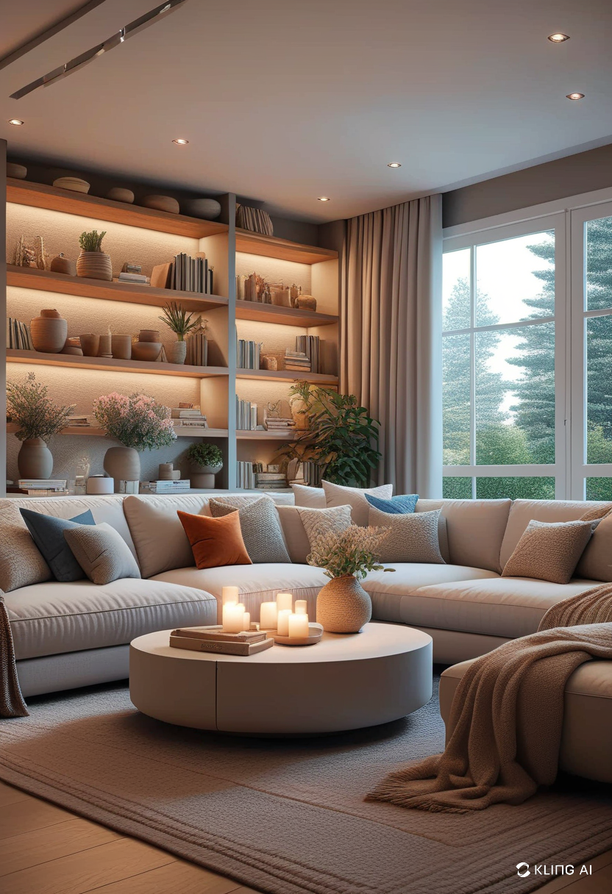
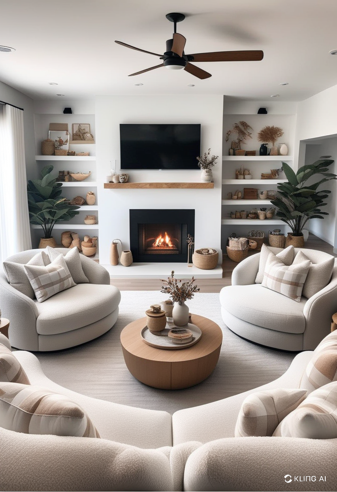
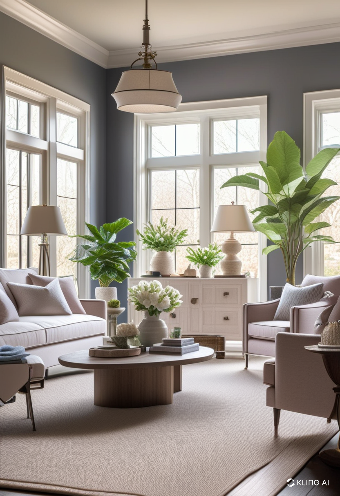
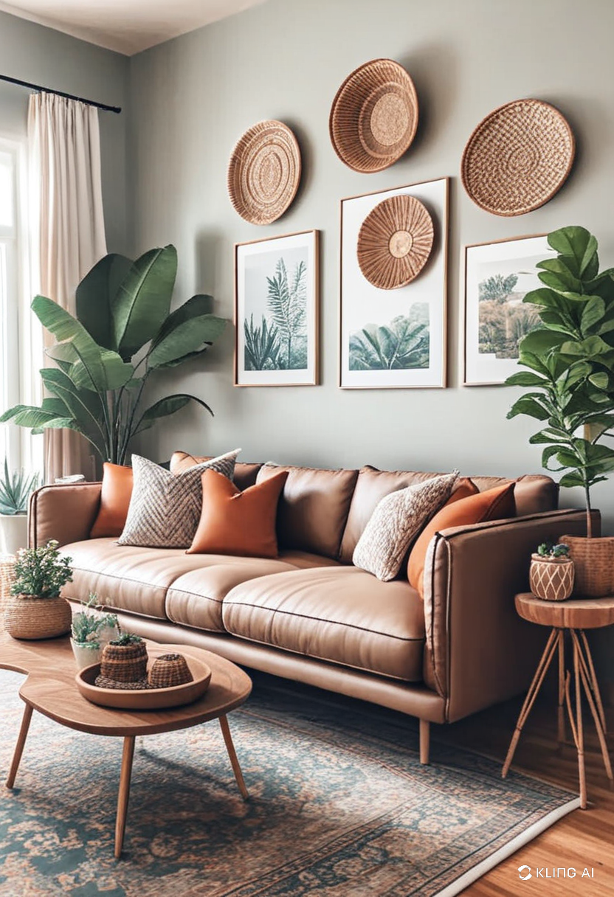

Your sitting room is the heart of your home, where relaxation meets socialization. A well-designed sitting room enhances comfort, aesthetics, and functionality. Whether you’re aiming for a contemporary look or a classic feel, the right decor can make a world of difference.
Choosing the Right Color Palette for Your Sitting Room
The color scheme you choose sets the mood of your space. Neutral tones like beige, gray, and white create a serene and elegant environment, while bold hues such as navy blue, emerald green, or deep red add a dramatic touch. Combining colors through furniture, wall paint, and accessories allows for a personalized ambiance.
Furniture Selection and Arrangement for Maximum Comfort
Choosing the right furniture is crucial for both aesthetics and comfort. Sofas, armchairs, and coffee tables should complement the space without overwhelming it. Modular furniture is a great option for smaller sitting rooms, while sectional sofas work well in larger spaces. Arranging your furniture to encourage conversation and relaxation ensures an inviting atmosphere.
Incorporating Lighting for Ambiance and Functionality
Lighting is an essential component of sitting room decor. Layered lighting, which includes ambient, task, and accent lighting, creates a balanced and cozy ambiance. Chandeliers or pendant lights offer elegance, while floor lamps and table lamps provide functional illumination. Smart lighting solutions allow for adjustable brightness, catering to different moods and occasions.
Adding Textures and Patterns for Depth and Interest
Incorporating various textures and patterns adds depth to your sitting room. Rugs, cushions, and curtains introduce soft textures, while materials like wood, glass, and metal provide contrast. Mixing patterns, such as geometric prints and floral designs, creates visual intrigue without overwhelming the space.
Walls should not be overlooked when decorating your sitting room. Artwork, framed photographs, and mirrors add personality and charm. A well-placed gallery wall can serve as a focal point, while oversized mirrors enhance light and make the room appear more spacious. Wall-mounted shelves provide both storage and decorative appeal.
Houseplants bring freshness and vibrancy to your sitting room. Indoor plants such as snake plants, pothos, or fiddle-leaf figs purify the air while adding a natural aesthetic. Placing plants on shelves, side tables, or in hanging planters enhances the overall decor without occupying too much space.
A well-organized sitting room feels more spacious and inviting. Storage ottomans, built-in shelves, and stylish baskets help keep the space clutter-free. Multi-functional furniture, such as coffee tables with hidden storage, ensures practicality while maintaining a stylish look.
Personalizing your sitting room makes it truly feel like home. Incorporating family heirlooms, statement pieces, and unique accessories reflects your personality. Seasonal decor changes, such as cozy throws for winter or vibrant floral arrangements for summer, keep the space dynamic and engaging.
Sitting room decor is about blending style with functionality. By selecting the right colors, furniture, lighting, and accessories, you can create a space that is both comfortable and visually appealing. Thoughtful design choices and personal touches will ensure your sitting room is a welcoming retreat for family and guests alike.
   